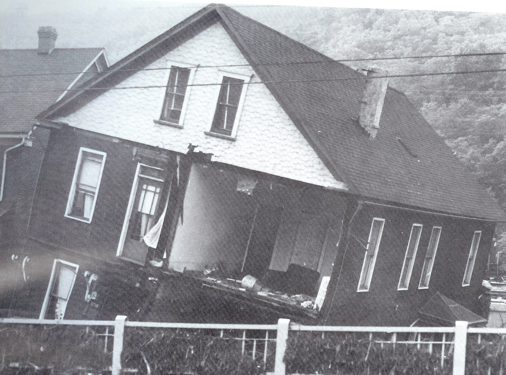

Chapter 22
The Second Flood and the New Law
The water came down on the night of July 19, 1977. It did not break from a reservoir. It fell from the sky onto the steep hillsides above Johnstown and poured into the narrow valleys. It overwhelmed the concrete channel walls the Army Corps of Engineers had built four decades earlier. The Corps had declared Johnstown flood-free. The water ignored the declaration.
Sixty miles to the southwest, the South Fork dam site lay quiet. The Pennsylvania Historical and Museum Commission had placed a bronze marker there in the early 1960s. The breach in the embankment had grassed over. Hikers stopped to read the plaque. The structure that had killed 2, 209 people in 1889 was a destination for an afternoon drive. It was memory. It was not warning.
These two facts occupied the same decade. One belonged to the past. The other belonged to the present. The distance between them was the distance between a memorial and a floodplain. The memorial was fixed in place. The floodplain was active. The water connected them. It always connected them.
The survivors of 1889 were dying. By the mid-1960s, the fiftieth and seventy-fifth anniversaries had passed. The last witnesses spoke to newspapers in paragraphs that read like obituaries in advance. The Johnstown Tribune-Democrat published their recollections. The men and women who had climbed to attics and clung to rafters were old. Their children were old. The flood was becoming something that had happened to someone else.
A small museum opened in Johnstown. Photographs lined the walls. The famous image of the stone bridge, heaped with debris and burning, hung beside a display case holding a piece of the old club’s china. The South Fork Fishing and Hunting Club’s cottages still stood at the lake site. People photographed them. They looked quaint. They did not look like evidence.
The steel economy held. Bethlehem Steel had absorbed Cambria Iron in 1923, and the mills along the Little Conemaugh still produced rail and bar stock. The war had kept them running. The postwar years kept them running. The mill whistle still marked the shifts. The smoke still hung over the valley. The company was no longer a patron of the place. It was a line in a corporate ledger. But the line was still in the black. The valley worked.
The valley also flooded. The record showed major flooding in 1894, 1907, 1924, and 1936. The St. Patrick’s Day flood of March 1936 was the largest of the first half of the century. That flood, also known as the Pittsburgh Flood of 1936, was preceded by heavy rains beginning March 9 that did not stop until March 22. Snowmelt and heavy rain filled the Conemaugh. Water rose through the downtown. By nightfall on March 17, one-third of the city was under 17 feet of water. Twenty-five people lost their lives, and damages estimated at $43 million made it the worst flood since 1889. The disaster prompted the federal flood control works — the dredging, the channel walls, the declaration of safety. The 1936 flood was severe enough to justify the engineering. The engineering was severe enough to justify the confidence.
The confidence was the problem. The channel walls addressed river flooding. They did not address the hillsides. They did not address the stormwater that ran off the valley’s steep slopes. The Corps built for the river. The river was the threat the engineers could measure. The hillsides were the threat the engineers had not measured.
Meanwhile, the engineering profession moved forward. The American Society of Civil Engineers had investigated the South Fork dam failure in 1891. The report cited the lowered crest, the inadequate spillway, the lack of maintenance. The profession had learned from the disaster. Dam design advanced. Soil mechanics became a discipline. Hydraulic analysis grew more sophisticated. The standards rose.
Enforcement did not keep pace. Dam safety remained a state responsibility. States varied. Some had robust programs. Pennsylvania had a modest one. Many states had none. The gap between what engineers knew and what regulators required was the gap in which dams failed.
That gap opened elsewhere first. In February 1972, a coal-waste impoundment on Buffalo Creek in West Virginia failed. The dam held back 132 million gallons of black water. It broke. The water roared down the narrow hollow. It killed 125 people. It left 4, 000 homeless. The dam had been built by the Pittston Coal Company. It was made of mining waste. It was not engineered. It was not inspected. It was not maintained. The company called it a sludge pond. The coroner called it a dam.
The Buffalo Creek disaster was not a natural event. The impoundment had been built incrementally. Each addition raised the water level. Each addition raised the risk. The risk accumulated. The accumulation was the debt. The debt was in the coal waste. The coal waste was in the hollow. The hollow was where people lived. The people died.
Three months later, in June 1972, Hurricane Agnes struck the eastern seaboard. The storm pushed inland. It dropped rain across Pennsylvania, New York, and the Chesapeake watershed. Dams held. Some did not. The storm stressed hundreds of reservoirs across the region. The Susquehanna River exceeded flood stage at Wilkes-Barre. The damage across the eastern United States exceeded three billion dollars. The storm exposed the thinness of the regulatory fabric. Most dams in the country had no inspection record. No one knew how many dams existed. No one knew their condition. No one knew who was responsible for them.
The question was the same question the 1889 lawsuits had failed to answer. Who is responsible for a dam? The courts in the 1890s said the South Fork Fishing and Hunting Club members were not. The common law said negligence required proof of specific acts. The corporate shield said shareholders were not liable for corporate obligations. The act of God defense said the rain was unprecedented. The verdict said no one paid. The valley paid. The ledger stayed balanced on the private side. The public side absorbed the cost.
Congress acted. The National Dam Inspection Act of 1972 required the Army Corps of Engineers to inventory the nation’s dams. The law mandated inspections of dams that posed a threat to life or property. It directed the Corps to assess the condition of structures that had gone unexamined. The act was the first federal assertion that dam safety was not solely a state matter. It was a national concern. The law created a framework: the National Dam Inspection Program.
The law was a statute, not a verdict. It did not assign blame for past failures. It did not reopen the 1889 cases. It did something different. It established that the safety of a dam was a matter of federal record. The owner was responsible. The state was responsible. The federal government would inventory, inspect, and report. The responsibility was distributed. But it was no longer invisible.
Pennsylvania moved under the new framework. The state’s dam safety program tightened. The Department of Environmental Resources received authority to classify dams by hazard. High-hazard dams required regular inspection. The classification depended not on the dam’s size but on what lay below it. If a failure would kill people, the dam was high-hazard. The classification was a formal acknowledgment of what the 1889 flood had demonstrated. The danger was not the dam. The danger was the dam’s relationship to the valley below.
The South Fork dam site, by the mid-1970s, had passed into public custody. The Johnstown Area Heritage Association had taken an interest in the flood’s history. The site was marked. The lakebed was dry. The spillway was a ditch. The embankment was a hillside. The breach was a gap in a hillside. The place was a memorial. It was not a working structure. It did not need inspection. It needed a plaque.
The plaque said a dam had failed here in 1889. It said 2, 209 people died. It said the water reached Johnstown in fifty-seven minutes. It did not say who was responsible. The plaque was accurate. It was also incomplete. The question of responsibility had moved from the plaque to the statute book. The statute book was more precise. It was also less read.
The separation between the memorial and the statute was the separation between memory and prevention. The memorial fixed the flood in the past. The statute addressed the future. The memorial said this happened. The statute said this must not happen again. The two documents did not reference each other. The people who maintained the memorial and the people who enforced the statute worked in different buildings. They rarely spoke.
The steel economy still employed the valley. Bethlehem Steel’s Johnstown works ran three shifts. The mill on the Little Conemaugh produced rail. The smokestacks operated. The payroll sustained the town. The company’s distance from the place was administrative. Decisions about the Johnstown works were made in Bethlehem, Pennsylvania, and later in larger corporate centers. The absentee ledger was updated. The profits went where the shareholders were. The smoke stayed where the workers were.
The valley’s relationship to its own flood history was complicated by repetition. The 1936 flood had been severe. The floods of 1894, 1907, and 1924 had been lesser. Each event tested the channel. Each event tested the memory. The 1936 flood prompted the federal works. The works were built. The confidence followed.
On the evening of July 19, 1977, a thunderstorm stalled over the Conemaugh watershed. The storm dropped rain at a rate the valley’s drainage could not absorb. The National Weather Service measured the precipitation in inches per hour. The total exceeded ten inches in some areas. The water did not come from a reservoir. It came from the sky. It ran off the hillsides. It filled the streams. The streams overflowed. The water converged on the city from every direction.
The Army Corps channel walls contained the Conemaugh. The river rose but stayed within the concrete. The walls worked. They had been built for the river. The water that overwhelmed the city was not in the river. It was on the hillsides. It was in the streets. It poured down the valley walls and pooled in the low ground. The channel could not hold what was not in the channel.
The water rose in the downtown. It rose in the residential sections. It rose in the mill yards. It carried cars. It carried propane tanks. It carried debris. The propane tanks lodged against buildings. Some ignited. Fire joined water. The scene was 1889 in its outline. The mechanism was different. The result was the same. A flood in Johnstown.

The comparison was immediate. The Tribune-Democrat published a special edition. The headlines invoked 1889. The photographs showed water in the streets. The photographs showed people on rooftops. The photographs showed fire. The valley’s memory, organized for decades around the singularity of 1889, reorganized. The disaster was not a relic. It was a condition.
The 1977 flood killed at least eighty-five people. The count took weeks. The damage exceeded 300 million dollars. The Red Cross returned. The Federal Disaster Assistance Administration coordinated relief. The National Guard deployed. The scenes were familiar. The machinery of response was the machinery that had been built after 1936 and refined since. The response was faster than 1889. The destruction was less than 1889. But the destruction was sufficient.
The Corps’ declaration of flood-free status was withdrawn. The phrase had been a statement of engineering confidence. The confidence was based on the channel walls. The channel walls were sound. They had performed as designed. The design was the problem. The design addressed the river. The storm addressed the hillsides. The hillsides were not in the design.
The 1977 flood did not involve a dam failure. No reservoir broke. No impoundment collapsed. The National Dam Inspection Act of 1972 was not directly implicated. But the flood contextualized the new law. The statute answered the question of 1889: who is responsible for a dam. The answer was: the owner, the state, and the federal government, in a framework of inventory and inspection. The statute was specific. It addressed dams.
The 1977 flood demonstrated that the question was broader. Who is responsible for a watershed? The statute did not answer that question. The statute addressed structures. The flood addressed the land. The land was the hillsides. The hillsides were developed. The development was the encroachment of buildings on the slopes. The buildings channeled water. The pavement channeled water. The drainage systems were inadequate. The inadequacy was the debt. The debt was in the pavement, on the hillsides, above the city.
The pattern was the same. The 1889 flood was a deferred-maintenance event. The dam had been lowered. The spillway had been reduced. The repairs had been cosmetic. The ownership had been absentee. The risk had been transferred from the private owners to the public below. The public paid. The 1977 flood was a deferred-maintenance event. The drainage had been inadequate. The hillsides had been overdeveloped. The channel walls had been built for one threat. The other threat had been ignored. The risk had been transferred from the developers to the public below. The public paid.
The 1977 flood also demonstrated something the statute could not. The law created a duty of inspection. It created an inventory. It created a classification system. These were bureaucratic instruments. They were forms. The forms required someone to fill them out. The forms required someone to read them. The forms required someone to act on what they said.
The duty of care was now statutory. The duty of enforcement was administrative. The statute said inspect. The administration had to inspect. The gap between statute and enforcement was the same gap that had existed between common law and action in 1889. The law moved first. The resources followed. Sometimes they followed slowly. Sometimes they did not follow at all.
Pennsylvania’s dam safety program, tightened after 1972, classified dams by hazard. High-hazard dams required inspection. The classification was sound. The inspections depended on staffing. The staffing depended on budget. The budget depended on the legislature. The legislature depended on the perception of risk. The perception of risk depended on the last disaster. The last disaster was recent. The perception was high. The budget was adequate. For now.
The cycle was the problem. The 1889 flood raised the perception of risk. The perception faded. The 1936 flood raised it again. The perception faded. The 1972 Buffalo Creek disaster and Hurricane Agnes raised it nationally. The 1972 act followed. The 1977 flood raised it again. Each raise produced a response. Each response decayed. The decay was the deferred-maintenance debt. The debt accumulated between disasters. The debt was paid in the next disaster.
The inspection form was the instrument of the new era. The form had fields. The fields asked for the dam’s height, length, and storage capacity. The form asked for the owner’s name. The form asked for the downstream hazard classification. The form asked for the date of the last inspection. The form asked for the condition assessment: satisfactory, fair, poor. The form asked for the recommended action: no action, further study, repair, emergency.
The form was a document. The document was a duty. The duty was statutory. The statute was the answer to the question the 1889 lawsuits could not resolve. Who is responsible for a dam? The form said: the person whose name is in the owner field. The form said: the state agency that classifies the hazard. The form said: the federal program that inventories the structure. The form distributed responsibility. It did not eliminate it. It made it visible.
The compliance order was the enforcement instrument. The order was issued when an inspection found a deficiency. The order required the owner to act. The order had a deadline. The order had penalties for noncompliance. The order was a command. It was not a suggestion. It was not a request. It was the state telling a dam owner to fix the structure or face consequences.
The consequences were legal. They were financial. They were not physical. The physical consequence of a dam failure was the flood. The legal consequence of noncompliance was a fine. The fine was supposed to prevent the flood. The fine was supposed to be cheaper than the repair. The repair was supposed to be cheaper than the flood. The calculation was the calculation of deferred maintenance. If the fine was cheaper than the repair, the owner paid the fine. If the repair was cheaper than the flood, the owner repaired. If the owner could transfer the cost of the flood to the public, the owner did nothing. The calculation depended on who paid. The form said who paid. The form said the owner paid. The statute said the owner paid.
Whether the statute would hold was the question the form could not answer. The form was paper. The paper was in a file. The file was in an office. The office was in a state building. The state building was in Harrisburg. Harrisburg was far from the valley. The forms connected them. The connection was statutory. The connection was administrative. The connection was not physical. The physical connection was the water.
The South Fork dam site was quiet. The plaque was bronze. The breach was grass. The lakebed was dry. The memorial was maintained. The memorial was a place where people went to remember a flood. The flood was a thing that had happened in 1889. The flood was also a thing that had happened in 1977. The memorial did not mention 1977. The memorial was fixed. The valley was not.
The inspection form for a high-hazard dam in Pennsylvania in 1977 had a field for the owner’s name. It had a field for the condition. It had a field for the recommended action. The form was one page. The form was the answer to the question of 1889. The answer was on one page. The page was in a file. The file was in a cabinet. The cabinet was in an office. The office was in a building. The building was in a capital. The capital was far from the valley. The valley was below. The water was above. The form said who was responsible. The form did not say whether anyone would read it before the next rain.